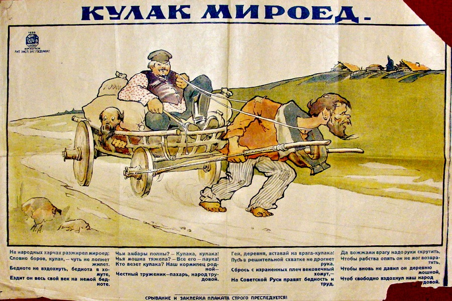

http://varjag-2007.livejournal.com/10401354.html
Классики о кулаках
varjag-2007: Благодаря современному образованию и деятельности организаций вроде «Мемориала», «Перми-36» и других шарлатанов, иногда встречаю комментарии, согласно которым кулаков придумали большевики. Типа такого:
В связи с этим, а также для полноты картины хочу привести некоторые цитаты из классиков отечественной литературы, относящиеся к кулакам. Но для начала напомню, кто такие кулаки:
Кулак это ведь не просто зажиточный крестьянин, крепкий хозяйственник и «эффективный менеджер». Это, вообще-то, человек, занимающийся ростовщичеством и эксплуатацией на селе (и, как отмечают некоторые исследователи, например, Прудникова, спекуляцией — ст. 107 УК РСФСР) — загоняющий крестьян в кабалу, отнимающий у них землю. Причем, если наемный труд ещё в то время (1920-е годы) был разрешен, хотя и с ограничениями, то ростовщичество было уголовным преступлением — ст. 173. УК РСФСР. Кстати, в постановлении о ликвидации кулацких хозяйств отменялось действие законов о применении наёмного труда. А с 1936 года эксплуатация человека человеком была прямо запрещена в сталинской Конституции.
Таким образом, просто по смыслу слова «кулак», это были вполне криминальные элементы. Не говоря уж о том, что любой ростовщик нуждается в услугах «коллекторов», которых на селе звали «подкулачниками», и в общем, можно представить, чем они занимались.

У Салтыкова-Щедрина в цикле произведений «Мелочи жизни» (1887 г.) есть целая глава «Мироед», описывающая становление кулачества. В ней он к вышесказанному добавляет важный элемент — помимо прочего, кулаки спаивали односельчан:
«Наицелесообразнейшее средство для удовлетворения алчности дала ему (кулаку — прим. моё) сивушная реформа. Она каждую деревню наградила кабаком…
Дешевизна водки произвела оглушающее действие. "Гольтепа" массой потянулась в кабак. Как будто она сразу хотела вознаградить себя за долгий искус лишения продукта, который, ввиду ее одичалости, представлял для нее громадный соблазн. Но, сверх того, ей необходимо было забыться, угореть. Обида преследует ее всюду: и дома и на улице. Только кабак, в лице своего властелина, видит в нем равноправного потребителя и ограждает эту равноправность. Только в кабаке он сам-большой и может прикрикнуть даже на самого мироеда: "Ты что озорничаешь? наливай до краев!" И мироед не ответит на его окрик, а только ухмыльнется в бороду.
"Разоренье" вошло в полный фазис своего развития. Пропивались заработанные тяжким трудом деньги, и ежели денег недоставало — пропивалась самая жизнь. Рабочие орудия, скот, одежда, личный труд, будущий урожай — все потянулось к кабаку и словно пропадало в утробе кабатчика. А рядом с кабаком стояла лавочка, где весь деревенский товар был налицо, начиная от гвоздя до женского головного платка. Зачем запасаться дома, зачем копить, коль скоро все в лавочке найти можно?! И денег не нужно - знай, хребтом шевели: мироед своего не упустит! он, брат, укажет, где и как шевелить!».
Кулаки не просто наживались на бедности односельчан, вгоняя их в кабалу, они эту бедность провоцировали спаиванием.
«Что касается до сельскохозяйственных оборотов мироеда-аборигена, то он ведет свое полеводство тем же порядком, как и "хозяйственный мужичок". Он любит и холит землю, как настоящий крестьянин, но уже не работает ее сам, а предпочитает пользоваться дешевым или даровым трудом кабальной "гольтепы". Сколько находится у него в распоряжении этого труда, столько берет он и земли. Он не гонится за большими сельскохозяйственными предприятиями, ибо знает, что сила его не тут, а в той неприступной крепости, которую он создал себе благодаря кабаку и торговым оборотам. Так что все его требования относительно земли, как надельной, так и арендуемой, ограничиваются тем, чтоб результаты ее производительности доставались ему даром, составляли чистую прибыль».
Под «неприступной крепостью» тут имеется ввиду новое закрепощение недавно раскрепощенных крестьян. Вот ещё одна цитата того же классика:
«Обставленный кабаком, лавочкой и грошовой кассой ссуд, он обмеривает, обвешивает, обсчитывает, доводит питание мужика до минимума и в заключение взывает к властям об укрощении людей, взволнованных его же неправдами. Поле деревенского кулака не нуждается в наемных рабочих: мужик обработает его не за деньги, а за процент или в благодарность за "одолжение". Вот он, дом кулака! вон он высится тесовой крышей над почерневшими хижинами односельцев; издалека видно, куда скрылся паук и откуда он денно и нощно стелет свою паутину».
Другой пример упоминания кулаков в русской классической литературе — слова, которые Достоевский вложил в уста старца Зосимы в «Братьях Каразмазовых».
«Боже, кто говорит, и в народе грех. А пламень растления умножается даже видимо, ежечасно, сверху идет. Наступает и в народе уединение: начинаются кулаки и мироеды».
Там же:
«…Чем беднее и ниже человек наш русский, тем и более в нем сей благолепной правды заметно, ибо богатые из них кулаки и мироеды во множестве уже развращены, и много, много тут от нерадения и несмотрения нашего вышло!».
Как-то не вяжутся эти слова с образом сельского «эффективного менеджера». Показательно, что в споре между Достоевским и критиком Василием Авсеенко обоими в отрицательном ключе используются через запятую как синонимы слова «мироед», «кулак», «самодур». Авсеенко их вводит, а Достоевский цитирует, не оспаривая при этом отрицательного их значения.
А вот, что пишет Куприн о «типе кулака из Мещовского уезда». Он описывает остановку на станции Антреа, где был накрыт шведский стол:
«Каждый подходил, выбирал, что ему нравилось, закусывал, сколько ему хотелось, затем подходил к буфету и по собственной доброй воле платил за ужин ровно одну марку (тридцать семь копеек). Никакого надзора, никакого недоверия. Наши русские сердца, так глубоко привыкшие к паспорту, участку, принудительному попечению старшего дворника, ко всеобщему мошенничеству и подозрительности, были совершенно подавлены этой широкой взаимной верой. Но когда мы возвратились в вагон, то нас ждала прелестная картина в истинно русском жанре. Дело в том, что с нами ехали два подрядчика по каменным работам. Всем известен этот тип кулака из Мещовского уезда Калужской губернии: широкая, лоснящаяся, скуластая красная морда, рыжие волосы, вьющиеся из-под картуза, реденькая бороденка, плутоватый взгляд, набожность на пятиалтынный, горячий патриотизм и презрение ко всему нерусскому — словом, хорошо знакомое истинно русское лицо. Надо было послушать, как они издевались над бедными финнами.
— Вот дурачье так дурачье. Ведь этакие болваны, черт их знает! Да ведь я, ежели подсчитать, на три рубля на семь гривен съел у них, у подлецов... Эх, сволочь! Мало их бьют, сукиных сынов! Одно слово — чухонцы.
А другой подхватил, давясь от смеха:
— А я... нарочно стакан кокнул, а потом взял в рыбину и плюнул.
— Так их и надо, сволочей! Распустили анафем! Их надо во как держать!
И тем более приятно подтвердить, что в этой милой, широкой, полусвободной стране уже начинают понимать, что не вся Россия состоит из подрядчиков Мещовского уезда Калужской губернии».
Хотя этот отрывок не раскрывает прямо того содержания, которое я приводил выше, и хотя он даже не о сельских жителях, а о «подрядчиках по каменным работам», но Куприн считает, что такие нравы характерны для кулаков. Кроме того, я привел этот отрывок потому, что его иногда цитируют неполностью, чтобы создать впечатление о «русофобии» Куприна. Дескать, он же говорит, что таково «истинно русское лицо»! На самом деле, это ирония — Куприн пишет, что таково истинно кулацкое лицо.
Ну и, конечно, нельзя не упомянуть знаменитые «Письма из деревни» (1872-1887 гг.) Александра Энгельгардта, хоть он и не писатель, а публицист.
«Из всего "Счастливого уголка" только в деревне Б. есть настоящий кулак. Этот ни земли, ни хозяйства, ни труда не любит, этот любит только деньги. Этот не скажет, что ему совестно, когда он, ложась спать, не чувствует боли в руках и ногах, этот, напротив, говорит; "Работа дураков любит", "Работает дурак, а умный, заложив руки в карманы, похаживает да мозгами ворочает". Этот кичится своим толстым брюхом, кичится тем, что сам мало работает: "У меня должники все скосят, сожнут и в амбар положат". Этот кулак землей занимается так себе, между прочим, не расширяет хозяйства, не увеличивает количества скота, лошадей, не распахивает земель. У этого все зиждется не на земле, не на хозяйстве, не на труде, а на капитале, на который он торгует, который раздает в долг под проценты. Его кумир — деньги, о приумножении которых он только и думает. Капитал ему достался по наследству, добыт неизвестно какими, но какими-то нечистыми средствами, давно, еще при крепостном праве, лежал под спудом и высказался только после "Положения". Он пускает этот капитал в рост, и это называется "ворочать мозгами". Ясно, что для развития его деятельности важно, чтобы крестьяне были бедны, нуждались, должны были обращаться к нему за ссудами. Ему выгодно, чтобы крестьяне не занимались землей, чтобы он пановал со своими деньгами».
Энгельгардт знал, о чем писал, потому что писал с натуры — сам долгие годы занимался сельским хозяйством.
Другой не менее осведомленный человек — российский статистик и публицист, коллежский секретарь, член Вольного экономического общества Г.П.Сазонов написал целую книгу о мироедах «Ростовщичество-кулачество. Наблюдения и исследования» (1894 г.). Вот он описывает страх крестьян перед кулаком:
«Сходъ заколыхался, зашумелъ. Я отошелъ въ сторону. Повидимому міръ раскололся на две партіи. Одна требовала, чтобы показанія делались правдиво, другая указывала на то, что ростовщики отомстятъ за правду…
Бояться же раскрытія правды они им?ли серьезныя основанія, такъ какъ эти милые ребята натворили зд?сь много д?лъ, за которыя въ другомъ государств? они могли отправиться въ м?ста бол?е ч?мъ отдаленныя».
Дальше приводится длинный список примеров «эффективного менеджмента» со стороны кулаков. Вот один из них:
«Иванъ Григорьевъ былъ долженъ Михаилу Исакову 4 года назадъ по росписк? въ 105 руб., въ счетъ которой взялъ 10 сельдей, 1 пудъ с?мя, однимъ словомъ забрано на 20 руб. Свезено 6 беркойцевъ льна по 14 руб., а въ другихъ м?стностяхъ было по 20—18 руб., 4 пары гусей отданы Исакову въ гостинецъ. «Стыдно теб? о гусяхъ поминать, сказалъ онъ, это въ гостинцы». Исполнительный листъ полученъ въ 70 руб.».
Но это всё творческие личности, «они так видят», скажут некоторые. Что ж, вот, что говорит «Настольный энциклопедический словарь» (1896 г.):
«Кулак — перекупщик, маклак, особенно в хлебной торговле; в обыденной речи означает вообще человека, старающегося всякими неправдами нажить большие барыши; от этого значения слова кулак происходит слово кулачество или кулачничество, т. е. промысел кулака, перекупля, барышничество».
В 1920-е годы, после Гражданской войны, все эти кулацкие практики вернулись в деревню. Поэтому, повторюсь, борьба с ними была совершенно правильной и оправданной с точки зрения закона. Претензий к советской власти по этому поводу может быть только две: плохая организация переселения кулаков и отдельные несправедливые обвинения тех, кто кулаками на самом деле не являлся. (Подробнее о статистике раскулачивания — тут.)
Завершить эту тему хочется словами Салтыкова-Щедрина из его переписки:
«Он теперь кулаков стал восхвалять. Вообще, осел изрядный».
За помощь в подборе материала спасибо камраду fkulikov